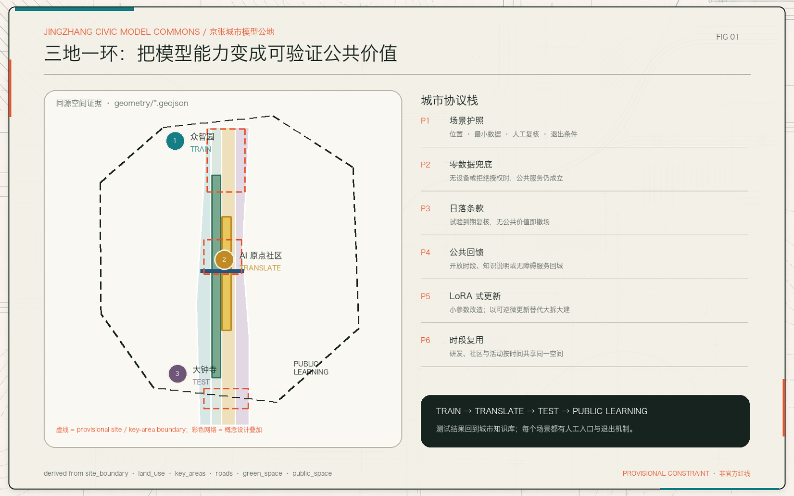
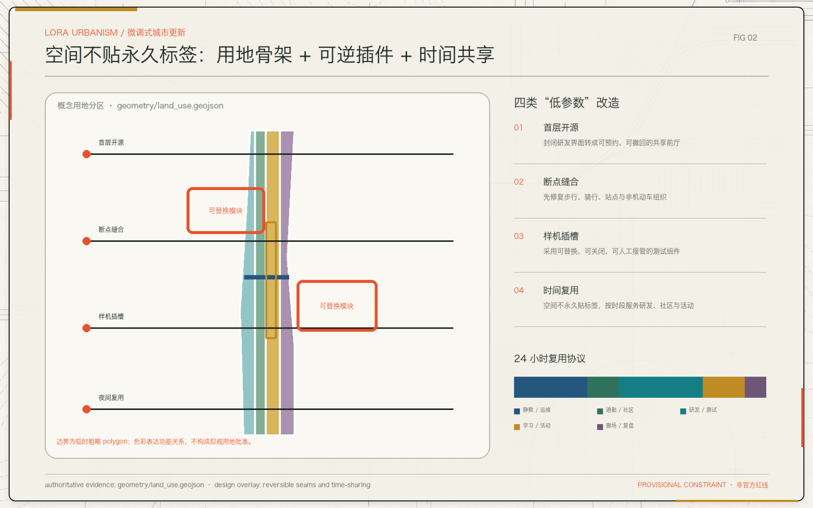
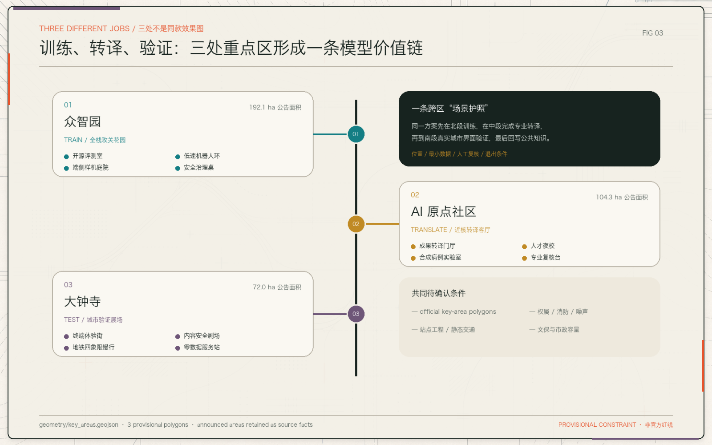
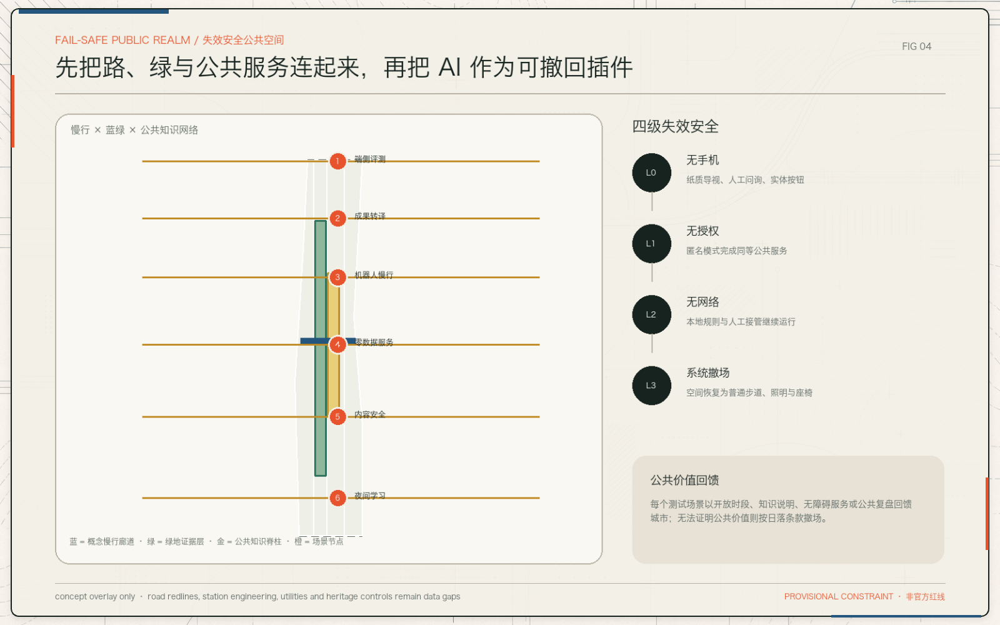
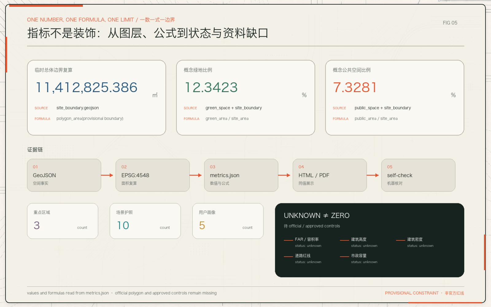

P1场景护照
位置、对象、数据、复核、责任与退出条件同表登记。
北部研发，中部转译，南部验证。每个 AI 场景都有护照、人工复核、零数据兜底和日落条款。
临时边界退到背景；设计重点落在研发、转译、验证和公共学习之间的可追溯回路。

创新不是更多传感器，而是每个自动化动作都知道何时退出。
P1位置、对象、数据、复核、责任与退出条件同表登记。
P2无手机、拒授权、无网络时仍能完成公共服务。
P3无公共价值、风险不可控或维护失衡即撤场。
P4以开放时段、知识说明、无障碍服务或公开复盘回馈城市。
P5首层开源、断点缝合、样机插槽；不以大拆大建为默认。
P6按 24/7 时间表叠加研发、社区、学习与活动。
完整概念用地 partition 提供空间骨架；可逆插件和 24 小时时段协议负责适应变化，不把临时测试固化成永久功能。

不是三张同款效果图：众智园训练，AI 原点转译，大钟寺在真实城市界面验证。

开源评测、端侧样机、低速机器人和安全治理。
论文到产品、产品到公共价值之间的专业转译。
终端、内容、站点与零数据服务在城市界面接受检验。
测试不是“上线”；每个场景都必须说明最小数据、人工复核和退出条件。
| # | 场景 | 空间 | 最小数据 | 人工复核 | 退出条件 |
|---|---|---|---|---|---|
| 01 | 模型评测开放日 | 众智园 | 公开基准/合成样本 | 专业评审 | 基准不可追溯 |
| 02 | 机器人慢行配送 | 知识脊柱 | 局部避障 | 现场安全员 | 高峰/故障/投诉 |
| 03 | 端侧感知路灯 | 大钟寺 | 匿名环境量 | 运维人员 | 切回普通照明 |
| 04 | 医疗转译模拟 | AI 原点 | 合成病例 | 医疗专家 | 不进入真实诊疗 |
| 05 | 教育导师亭 | 学习点 | 本地选择题 | 教师/社工 | 偏差或申诉 |
| 06 | 创业合规台 | 转译门厅 | 主动输入 | 专业人员 | 禁止自动最终意见 |
| 07 | 城市运行看板 | 公共展厅 | 聚合指标 | 管理员 | 重识别风险 |
| 08 | 京张历史导览 | 遗址节点 | 无个人数据 | 史料编辑 | 来源争议 |
| 09 | 开发者城市周 | 三场轮换 | 最小报名字段 | 活动运营 | 安保交通未确认 |
| 10 | 无障碍出行助手 | 慢行节点 | 可选目的地 | 人工问询 | 保留无手机路线 |
普通功能先成立：灯先会照明，路先能无障碍通行，服务亭先有人类入口。

任何展示值都回到 metrics.json；未知值明确显示为未知，不用 0 或渲染图制造确定性。
